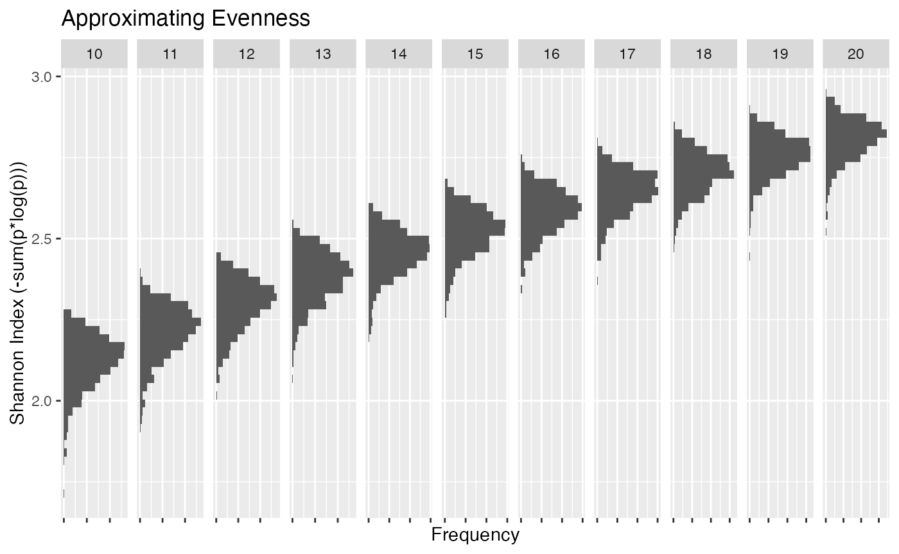

A note about making inferences on changes in direction of diversity indices, in particular the Shannon Index
\[Index = -\sum_{i = 1}^np_ilog(p_i)\] where \(n\) is the number of entities, \(\sum p_i = 1\) and \(p_i\) is the proportion of entity \(i\)’s contribution to the whole. This could be the proportion of species \(i\)’s biomass in the system, the proportion of total catch from species \(i\), the proportion of fleet \(i\)’s revenue, effort etc.
Properties of the index
The maximum value of the index is when when the system is evenly distributed, i.e. \(p_i = 1/n\) for all \(i\). This maximum increases as n increases
Simulation study
Can you make inferences based on the decline or increase in such an index over time if n remains unchanged? What about if n changes over time?
To investigate we need to simulate n probabilities conditional on their sum being equal to 1. We can do this in several ways, each way resulting in different distributional properties.
- Simulate n uniform [0,1] random variables and divide by the sum (This will result in more even like probabilities)
- Simulate n uniform random variables sequentially conditional on the previous value (This will result in more skewed, top heavy, distribution of probablites)
- ?
Eveneness
Let \(X_i = U[0,1]\)
Define \[p_i = \frac{X_i}{\sum_{j = 1}^nX_j}\] Simulate 1000 samples for a range of n’s.

One can see that there is a significant amount of overlap between distributions making any conclusions about, lets say, a decline in the index complicated. It could be due to a reduction in the number of species or a reorganization of the entities in the system or a combination of both. And this is under the assumption that all entities are simulated somewhat evenly.
Skewed
Let \(X_1 = U[0,1]\) Then define:.
\(X_2 = U[0,1-x_1]\)
\(X_3 = U[0,1-x_1-x_2]\) …
\(x_n = 1-\sum{x_i}\)
Simulate 1000 samples for a range of n’s
This random sampling is akin to having a few entities dominant in the system and all others insignificant. Under this sampling all distributions look similar. This is due to the fact that all of the systems have many entities with \(p_i -> 0\) resulting in effectively similar values of n. Very little inference could be made.
Complete
As can be seen by combining the above two methods of sampling there is a large part of the parameter space that is not being adequately sampled i.e the distribution of probabilities that result in values of the Shannon Index that exceed the value of 2 but are less than the lower tail of evenness.
Ideally we need a good method of simulating the full parameter space
Conclusion
There are many publications demonstrating the limitations of these types of diversity metrics (List some of them).
Inferences on the community structure, based on changes in this index, can not be made without deeper investigation into the composition of the entities that make up the system